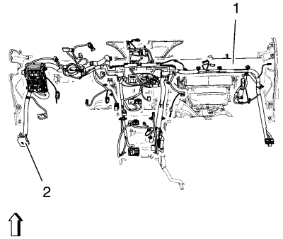
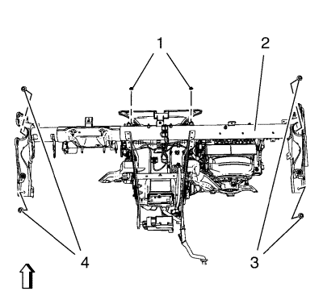
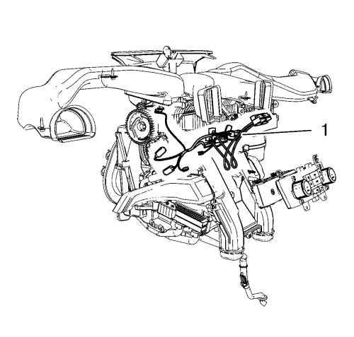
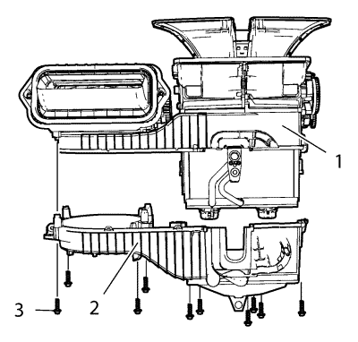

Sustitución del núcleo del evaporador del aire acondicionado
Procedimiento de desmontaje
- Desmonte el conjunto del panel de instrumentos. Consultar Sustitución del conjunto del panel de instrumentos .

- Desmonte el mazo de cables (2) del panel de instrumentos de la barra de acoplamiento (1) del panel de instrumentos.
Desenganche los conectores eléctricos.

- Desmonte la barra de acoplamiento del panel de instrumentos (2).
| 3.1. | Desmonte los 4 tornillos de la la barra de acoplamiento del panel de instrumentos (3, 4). |
| 3.2. | Desmonte las 2 tuercas de la la barra de acoplamiento del panel de instrumentos (1). |

- Desmonte el mazo de cables del módulo del aire acondicionado (1).
Desenganche los conectores eléctricos.
- Desmonte el núcleo del calefactor. Consultar Sustitución del calefactor .
- Desmonte el motor del ventilador. Consultar Sustitución del motor del soplador → Volante a la derecha → Volante a la izquierda .
- Desmonte el módulo de control del calefactor, el ventilador y el aire acondicionado. Véase Sustitución del módulo de control del calefactor, el soplador y el aire acondicionado → Volante a la izquierda → Volante a la derecha o Sustitución del módulo de control del calefactor, el soplador y el aire acondicionado → Volante a la derecha → Volante a la izquierda .
- Recubra el agente frigorífico. Consultar Recuperación y recarga del agente frigorífico .

- Desmonte la caja del evaporador de A/C y del calefactor (2) del módulo de control del calefactor, el ventilador y el aire acondicionado (1).
- Desmonte 10 tornillos de la caja del evaporador de A/C y el calefactor (3).
- Desmonte el núcleo del evaporador de A/C del módulo de control del calefactor, el ventilador y el aire acondicionado.
Procedimiento de montaje
- Monte el núcleo del evaporador de A/C en el módulo de control del calefactor, el ventilador y el aire acondicionado.
- Monte la caja del evaporador de A/C y del calefactor (2) en el módulo de control del calefactor, el ventilador y el aire acondicionado (1).
Precaución:Consulte Precaución con las fijaciones en la sección Prólogo.
- Monte 10 tornillos de la caja del evaporador de A/C y el calefactor (3) y apriételos a 2,5 N·m (22 lib. pulg.).
- Recuperación y recarga de refrigerante. Consultar Recuperación y recarga del agente frigorífico .
- Monte el módulo de control del calefactor, el ventilador y el aire acondicionado. Véase Sustitución del módulo de control del calefactor, el soplador y el aire acondicionado → Volante a la izquierda → Volante a la derecha o Sustitución del módulo de control del calefactor, el soplador y el aire acondicionado → Volante a la derecha → Volante a la izquierda .
- Monte el motor del ventilador. Consultar Sustitución del motor del soplador → Volante a la derecha → Volante a la izquierda .
- Monte el núcleo del calefactor. Consultar Sustitución del calefactor .
- Monte el mazo de cables del módulo del A/C (1).
Conecte los conectores eléctricos.
- Monte la barra de acoplamiento del panel de instrumentos (2).
| 9.1. | Monte 4 tornillos de la barra de acoplamiento del panel de instrumentos (3 4) y apriételos a 22 N·m (17 lib. pie). |
| 9.2. | Monte 2 tuercas de la barra de acoplamiento del panel de instrumentos (1) y apriételos a 6 N·m (53 lib. pulg.). |
- Conecte el mazo de cables (2) del panel de instrumentos a la barra de unión (1) del panel de instrumentos.
Conecte los conectores eléctricos.
- Monte el conjunto del panel de instrumentos. Consultar Sustitución del conjunto del panel de instrumentos .
| © Copyright Chevrolet. Reservados todos los derechos |